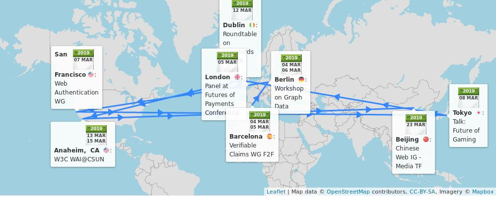
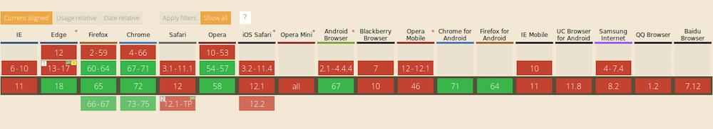
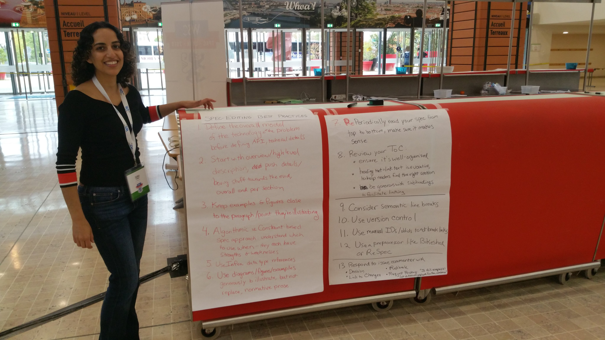
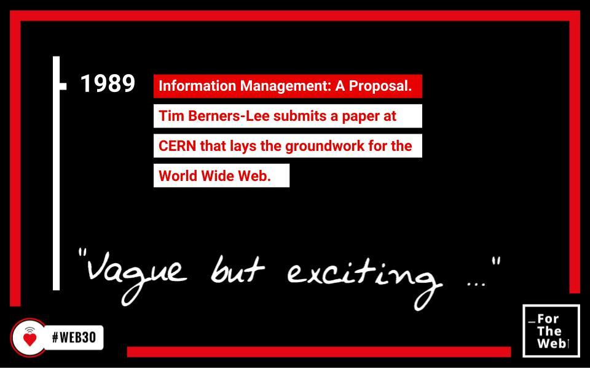
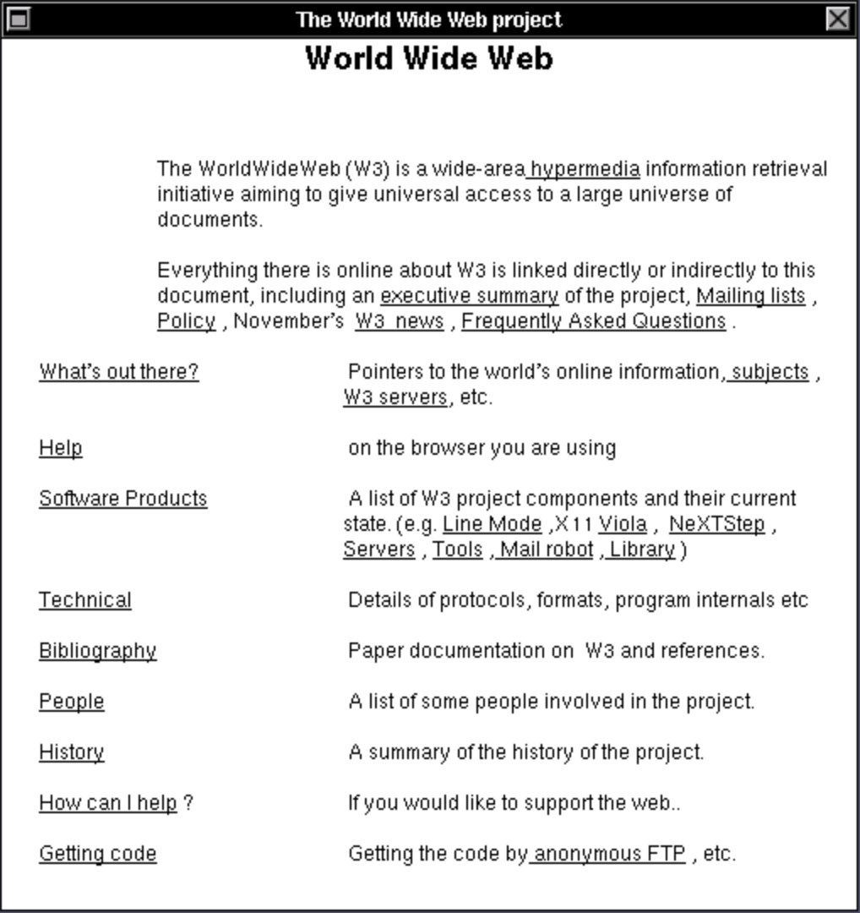
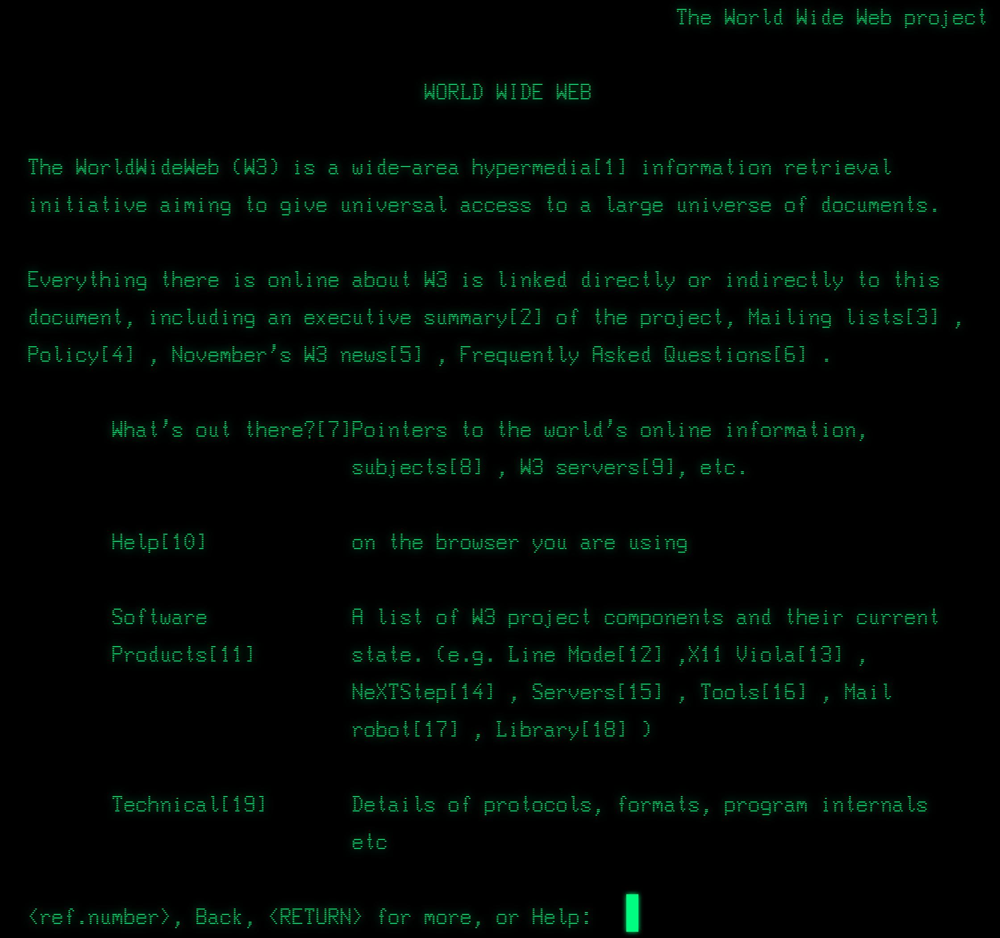

🗓️ March@w3c: #W3CWorkshop, @w3c_wai team at CSUN, groups' meetings, etc. https://www.w3.org/participate/eventscal.html
4-5 Mar.: The @w3c Verifiable Claims #WorkingGroup meets in #Barcelona 🇪🇸 @PayInnHub to continue to develop use cases and standards for expressing and exchanging "claims" verified by a 3rd party, and make the #Web more #secure https://w3c.github.io/verifiable-claims/f2f/2019-03-Barcelona/
https://twitter.com/w3cdevs/status/1061972978475433984
https://twitter.com/w3cdevs/status/11014837152539320324-6 Mar.: Hosted by @neo4j in #Berlin 🇩🇪, the #W3CWorkshop Web Standardization for Graph Data discusses creating bridges between #RDF, #PropertyGraph and #SQL. Event sponsored by @ontotext, @Oracle, @arangodb, @LDBCouncil, and @boost4_0 of @EU_H2020
https://www.w3.org/Data/events/data-ws-2019/
https://twitter.com/w3cdevs/status/11014837184249118727 Mar.: The @w3c #WebAuthn #WorkingGroup has a #f2fmeeting to kick off work on #WebAuthn level 2. The meetings are hosted by @google in #SanFrancisco 🇺🇸 https://www.w3.org/Webauthn/
https://twitter.com/w3cdevs/status/11014837227366522885 Mar.: @JAlanBirdW3C shows the relevance of #standards in creating real value in the #payments ecosystem at the @vendorcom's Future of Payments conference in #London 🇬🇧
https://www.vendorcom.com/event.php?event_id=893
https://twitter.com/w3cdevs/status/110148372050525798412 Mar.: Bringing his Web Media expertise, @tidoust speaks about the importance of #Web #standards at the #DVBWorld 2019 conference in #Dublin 🇮🇪 @dvb_project https://www.dvbworld.org/
https://twitter.com/w3cdevs/status/11014837271574528008 Mar.: @tidoust presents the potential of #gaming on the #Web using #standards, at the IoT International Symposium 2019 in #Tokyo, 🇯🇵
https://smartiot-forum.jp/application/files/9015/5082/6875/forum-soukaisympo2019_en_v2.pdf
https://w3c.github.io/web-roadmaps/games/
https://twitter.com/w3cdevs/status/110148372581938380814 Mar.: @sabouzah, Wilco Fiers and @1mjmueller run a session on #accessibility Conformance Testing (ACT) and how it can make your testing tools and manual evaluation more transparent and accurate, in #Anaheim 🇺🇸, #a11y #WCAG_ACT
https://www.csun.edu/cod/conference/2019/sessions/index.php/public/presentations/view/1045
https://twitter.com/w3cdevs/status/110148373211503411514 Mar.: @sabouzah and @wahlbin explores how #WCAG21 helps #developers design accessible desktop and mobile #websites and #apps for a variety of devices, including smart phones and beyond, #CSUNATC19 #Anaheim 🇺🇸 #accessibility #a11y
https://www.csun.edu/cod/conference/2019/sessions/index.php/public/presentations/view/1187
https://twitter.com/w3cdevs/status/110148373081061376013 Mar.: @shawn_slh and @awkawk explore the low vision, cognitive and mobile user needs as part of the success criteria of the #WCAG21 requirement at the 34th #CSUNATC19 conference, #Anaheim 🇺🇸 #accessibility #a11y
https://www.csun.edu/cod/conference/2019/sessions/index.php/public/presentations/view/1325
https://twitter.com/CSUNCOD/status/1098250933295894529
https://twitter.com/w3cdevs/status/110148372879742156914 Mar.: @cooper_w3c explains how the @w3c'>@w3c Accessible Platform Architectures (APA) #WorkingGroup checks @w3c'>@w3c specifications provide support for #accessibility, #CSUNATC19 #Anaheim 🇺🇸, #a11y
https://www.csun.edu/cod/conference/2019/sessions/index.php/public/presentations/view/1177
https://twitter.com/w3cdevs/status/110148373423315763215 Mar.: @shawn_slh, Brent Bakken and @yatil run a tutorial on new and in-progress @wai education and outreach material related to Web #accessibility, #CSUNATC19 #Anaheim 🇺🇸, #a11y
https://www.csun.edu/cod/conference/2019/sessions/index.php/public/presentations/view/1259
https://twitter.com/w3cdevs/status/110148373708528844923 Mar.: The @w3c Chinese Web #InterestGroup Media Task Force has a #f2fmeeting in #Beijing 🇨🇳. Read the list of attendees and agenda topics: https://github.com/w3c/chinese-ig/blob/master/meetings/2019-03-23.md
https://twitter.com/w3cdevs/status/110148374281472000115 Mar.: the @wai team (Judy Brewer, @sabouzah and RuoXi Ran) present progress and upcoming goals for #international uptake of Web #accessibility #standards, including #China, #Europe, and low and middle income countries, #a11y #CSUNATC19 #Anaheim 🇺🇸
https://www.csun.edu/cod/conference/2019/sessions/index.php/public/presentations/view/1316
https://twitter.com/w3cdevs/status/1101483740721827846Congrats to editors @balfanz, @aczeskis, @equalsJeffH, J.C. Jones, Michael B. Jones, Akshay Kumar, @AngeloSunmile, Rolf Lindemann, and Emil Lundberg for the newly published @w3c #WebStandard Web Authentication #WebAuthn: https://www.w3.org/TR/webauthn/ #timetoadopt https://twitter.com/w3c/status/1102555604151947265
The Web Authentication #API (also known as #WebAuthn) allows servers to register and authenticate users using public key #cryptography instead of a #password
https://twitter.com/w3cdevs/status/976111114739175426
https://twitter.com/w3cdevs/status/1102563433201975296The #WebAuthn API helps to eliminate passwords entirely. #Webauthn can be used both in single factor and multi-factor authentication schema. See different usage demos at https://webauthn.io/
https://twitter.com/w3cdevs/status/1102563438327484419As passwords can be insecure or hard to remember, #developers have also to worry about all the complications of passing passwords through systems and safely storing them in databases (about 81% of all hacking-related breaches leverage stolen or weak #passwords)
https://twitter.com/w3cdevs/status/1102563436477771782#WebAuthn is supported in the #Chrome, #firefox, and #edge #browsers, and is in technical preview in #Safari: https://twitter.com/webkit/status/1070377771724083201. See also https://caniuse.com/#feat=webauthn
https://twitter.com/w3cdevs/status/1102563442458808320While #WebAuthn is an important tool, it is always important to remember that #security should be incorporated into every step of how software is designed and developed
https://twitter.com/w3cdevs/status/1102563441305358343The #WebAuthn #API is a core component of @FIDOAlliance's #FIDO2 set of specs, along the #CTAP protocol: https://fidoalliance.org/fido2/
With #FIDO2 and #WebAuthn, all users around the world are now allowed to "log on" safely, and industries now count on better #security #privacy
https://twitter.com/w3cdevs/status/1102563440047067136.@fantasai, who edits 45+ specifications, has more than a little bit of experience to share on the topic!
https://twitter.com/w3cdevs/status/1103677939781115907Unless you've been involved in standardization efforts, you may not know the key role spec editors play in the making of a @w3c standard. Not only do they turn ideas and discussions in concrete documents, but they very often generate most of the ideas and animate the discussions!
In this last video from our series of #w3ctpac2018 interviews, @fantasai, @csswg editor extraordinaire, shares some of the best practices editors should follow when writing specifications
https://vimeo.com/313895322
https://twitter.com/w3cdevs/status/1103677938166304770During #w3ctpac2018, @fantasai and @marcosc (another prolific editor, and maintainer of the widely used ReSpec tool to edit specifications) animated a breakout to present and discuss shared best practices for editors. https://www.w3.org/2018/10/24-tpac-minutes.html
https://twitter.com/w3cdevs/status/1103677947150561280She also has a skill for best practices in general, e.g. her #CSS best http://fantasai.inkedblade.net/style/talks/best-practices/ - these best practices are featured in the @w3cx CSS Basics course: https://www.edx.org/course/css-basics
https://twitter.com/w3cdevs/status/1103677945447632898Thanks @fantasai for taking the time to make this interview, and to @webcastors for capturing it
https://vimeo.com/313895322
https://twitter.com/w3cdevs/status/1103677950212431872The best practices for editors cover topics ranging from how to structure a specification to how to quality-check it and how to manage input and feedback.
https://lists.w3.org/Archives/Public/spec-prod/2018OctDec/0011.html
https://twitter.com/w3cdevs/status/1103677948870184960Today is #InternationalWomensDay a good time to revisit the work that our own community needs to accomplish to improve its diversity, including with regard to women participation https://twitter.com/w3cdevs/status/1069992880519942150
https://twitter.com/w3cdevs/status/1104036780209303554SVG stands for Scalable Vector Graphics. Published as a @w3c #WebStandard (https://www.w3.org/TR/SVG11/), SVG is a vector-based image format "capable of just about anything" - see @chriscoyier's articles, videos, tutorials, etc.: https://css-tricks.com/lodge/svg/
🗣️ Care about #SVG? Awaiting a new release of the #specification with features you are dreaming of? Now is your time to contribute your ideas #developers #Web https://w3c.github.io/charter-drafts/svgcg-2019.html
https://twitter.com/w3cdevs/status/1105118733092179968.@AmeliasBrain, chair of the @w3c #SVG #CommunityGroup, welcomes input and feedback on her proposed #charter, so to make it easier for implementers, content creators the SVG community to engage with the SVG #Working Group:
https://w3c.github.io/charter-drafts/svgcg-2019.html
https://twitter.com/w3cdevs/status/1105118737882103813and 2) in a #CommunityGroup created last month which goal is to gather and incubate new features and requirements for SVG: https://www.w3.org/community/svgcg/
https://twitter.com/w3cdevs/status/1105118736686698501The work in SVG happens in two venues: 1) in the SVG #WorkingGroup (@svgwg) where #SVG2 is being developed: https://www.w3.org/TR/SVG2/
https://twitter.com/svgeesus/status/1026846936236740608
https://twitter.com/w3cdevs/status/1105118735201906688All proposals should be gathered in one place. To help record your ideas on the SVG Community Group #charter in a structured way, please submit feedback and/or file issues in #github https://github.com/w3c/charter-drafts/issues/new?title=[svgcg-2019] #DontBeShy !!
https://twitter.com/w3cdevs/status/1105118741954813952The #SVG #CommunityGroup is designed to make it easy for people to propose ideas with guidance and support from people with experience in Web #standards. The goal is to create a convincing package that SVG needs this or that new feature!
https://twitter.com/w3cdevs/status/1105118740818128897While this draft charter incorporates some of the discussions held in the @svgwg https://www.w3.org/Graphics/SVG/, it needs new development ideas brought by the #Web community: https://www.w3.org/community/svgcg/2019/03/08/draft-svg-community-group-charter-for-discussion/
https://twitter.com/w3cdevs/status/1105118739094294529Developing the Web,
one page,
one style sheet,
one library,
one framework,
one site,
one standard,
one protocol,
one best practice,
one prototype,
one mistake,
one crazy idea,
…
one contribution at a time. Here is to many more years of creativity #ForTheWeb #Web30 https://twitter.com/internetsociety/status/1105355260909047809
https://twitter.com/w3cdevs/status/1105412571279048704The Web aspires to be a universal platform, not only in terms of who can use it where and how, but also as a platform that anyone can help building https://twitter.com/w3cdevs/status/1105412571279048704
It is not obvious to many how to get involved in the development and standardization of Web technologies.
https://twitter.com/w3cdevs/status/1105516504542597120Fixing this requires lots of hard work - there has been progress, but lots more is undoubtedly needed.
https://twitter.com/w3cdevs/status/1105516509189885953Part of it is knowing it is at all possible, part of it is that it's hard to find your way, part of it is that once you've found it, it can be hard to be or feel effective in bringing changes, and overall, it takes time, energy and in a number of cases, money.
https://twitter.com/w3cdevs/status/1105516507768020999.@dontcallmeDOM shared his story https://twitter.com/dontcallmeDOM/status/1105505465151172608
https://twitter.com/w3cdevs/status/1105516512738246656What are your stories of getting involved in #Web standards?
https://twitter.com/w3cdevs/status/1105516511605780483But part of it is also to understand how and why others came to be involved. @w3c has over the years had many different profiles involved for many different reasons: tech obviously, but also writers; musicians, linguists, philosophers, etc
https://twitter.com/w3cdevs/status/1105516510389456896so did @TzviyaSiegman https://twitter.com/TzviyaSiegman/status/1105513000214163461
what is yours?
https://twitter.com/w3cdevs/status/1105516514537598976#w3corigin https://twitter.com/wz43rtx/status/1105791774419759104
https://twitter.com/w3cdevs/status/1105802147780878337#w3corigin https://twitter.com/kennethrohde/status/1105798441354043393
https://twitter.com/w3cdevs/status/1105802262222438400The #Web was invented on 12 March 1989, but by the end of 1990, @timberners_lee had written the WorldWideWeb which was both a reader and an editor of Web pages
https://twitter.com/anildash/status/1105562242211348480
Yesterday, the world was celebrating #Web30
🎂 🥂
https://twitter.com/w3cdevs/status/1105852128801763329If you feel nostalgic and want to browse old Web pages on a variety of virtual old #browsers, try http://oldweb.today/ - it includes WWW on NextStep - e.g. http://oldweb.today/WWW/http://www.w3.org/ The infrastructure behind that service itself is also on #github https://github.com/oldweb-today/netcapsule
https://twitter.com/w3cdevs/status/1105852132081717249The code of WorldWideWeb, later renamed Nexus, the world's first #WebBrowser, is on #github. This is a source import from 0.15 for NextStep.
https://github.com/cynthia/WorldWideWeb
https://twitter.com/w3cdevs/status/1105852130185883649Last month, some of these brilliant developers/designers and others were asked to show how pages would look in WorldWideWeb by rebuilding its UI and rendering in HTML/CSS/JS. Anyone can play with it at https://worldwideweb.cern.ch/browser - try to open a URL! 😁https://worldwideweb.cern.ch/images/howto/openurl_small.mp4
https://twitter.com/w3cdevs/status/1105852137387499521In 2013, @CERN convened 12 Web developers, designers, writers, standardistas, and technologists to rebuild the line-mode browser in the modern #browsers. Read the #MakingOf: http://line-mode.cern.ch/makingof/
https://twitter.com/w3cdevs/status/1105852133423935488If you want to help the #Web keep track of its own history, the @w3c Web History #CommunityGroup collects valuable information such as software, documents, testimonials, etc. This group is open to all, so if you have a resource to share, please do so! https://www.w3.org/community/webhistory/
https://twitter.com/w3cdevs/status/1105852140185141248Now, wouldn't it be fun to get the original WorldWideWeb as a #WebAssembly compiled module in recent browsers? Is that even doable? Let us know! 🗣️
https://twitter.com/w3cdevs/status/1105852138905919488Congrats @visionsremain and thanks for helping improve the Web!
https://twitter.com/w3cdevs/status/1106188507410821120https://twitter.com/marcosc/status/1106175817527123973
A story in two acts: https://twitter.com/w3cdevs/status/1042994693145939968
https://twitter.com/w3cdevs/status/1106188505619857411As #GDC2019 starts, we're excited to announce a @w3c #workshop on Web Games organized by @tidoust, chaired by @deltakosh from @babylonjs fame https://www.w3.org/2018/12/games-workshop/ https://twitter.com/w3c/status/1107636206962126849
The Web is already a pretty rich platform for games, with a number of its recent evolutions directly inspired by the needs from game developers: e.g. #WebAssembly or the #Gamepad #API. The @w3c Games on the Web roadmap gives a good overview https://w3c.github.io/web-roadmaps/games/
https://twitter.com/w3cdevs/status/1107672132794880000Among the expected topics: #3D graphics and the role of #WebGPU, multithreading, #WebAssembly, cloud-based gaming in the browser, game input, #WebAudio, etc.
https://twitter.com/w3cdevs/status/1107672138343960576That isn't to say all their needs are covered, and with the continuous innovation in this space, this #W3CWorkshop opens up an opportunity for the Games and Web people to determine together what priorities the Open Web Platform needs to address.
https://twitter.com/w3cdevs/status/1107672136087420928If you're new to the topic, you can get a flavor of game dev on the Web by following @w3cx #MOOC on #HTML5 #Apps and #Games by @micbuffa, and learn basic concepts of game development, collision detection, sprite-based animation, etc.
https://www.edx.org/course/html5-apps-and-games-2
https://twitter.com/w3cdevs/status/1107672139556098049And if you care about making the Web a great platform for games (and improving for other usages while doing so), mark your calendar for June 27-28 in Seattle 🇺🇸, and register your interest or submit a position paper by May 10 🗓️
https://www.w3.org/2018/12/games-workshop/
https://twitter.com/w3cdevs/status/1107672142722854912Much progress was made - #KUTGW https://twitter.com/agouaillard/status/1109486743798071297
https://twitter.com/w3cdevs/status/1109873736210137089As we covered before, testing the proper implementation of #WebRTC is rather more complicated than testing usual #browser APIs https://twitter.com/w3cdevs/status/1014139041112051718
Yesterday and today, a subset of the #WebRTC Working Group and other active #WebRTC community members were using the #ietf104 #ietfhackathon in Prague 🇨🇿 as an opportunity to make progress on the test suite needed to bring #WebRTC to Recommendation https://twitter.com/agouaillard/status/1109808773605089281
https://twitter.com/w3cdevs/status/1109873734679257091Hear, hear! Please apply #asap for this @wai front-end #accessibility specialist position - looking forward to work with you at W3C! https://twitter.com/w3c_wai/status/1110191959895883776
https://twitter.com/w3cdevs/status/1110955413862666241This proposal has emerged from the discussions of the #Web5G workshop last May https://twitter.com/w3cdevs/status/1018872410068660225
A proposed charter for a brand new Web & Networks Interest Group https://www.w3.org/2019/03/web-networks-charter-draft.html
The group would look at the needs & opportunities emerging from evolutions from the network layer (#5G, #EdgeComputing, #QUIC) and match them to app capabilities
https://twitter.com/w3c/status/1111275910781648901
https://twitter.com/w3cdevs/status/1111278454308249607